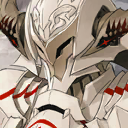
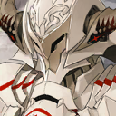
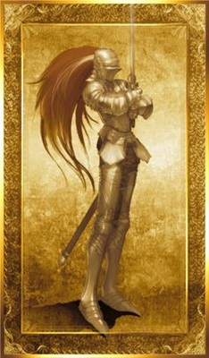

知名從者
 阿爾托莉亞・潘德拉剛
阿爾托莉亞・潘德拉剛 阿爾托莉亞・潘德拉剛〔Alter〕阿爾托莉亞・潘德拉剛〔Lily〕尼祿・克勞狄烏斯齊格飛蓋烏斯・尤利烏斯・凱撒阿蒂拉吉爾・德・萊斯騎士德翁沖田總司弗格斯・馬克・羅伊莫德雷德尼祿・克勞狄烏斯〔Bride〕兩儀式羅摩
阿爾托莉亞・潘德拉剛〔Alter〕阿爾托莉亞・潘德拉剛〔Lily〕尼祿・克勞狄烏斯齊格飛蓋烏斯・尤利烏斯・凱撒阿蒂拉吉爾・德・萊斯騎士德翁沖田總司弗格斯・馬克・羅伊莫德雷德尼祿・克勞狄烏斯〔Bride〕兩儀式羅摩
Saber 劍職

符合的英靈自然要有與劍士相稱的傳說，亦被要求魔力以外的能力值皆為最高等級。職階技能是【對魔力】和【騎乘】。另外，符合的英靈大多有著瞬間攻擊力優秀的特長。
比起其他職階，劍士的攻擊力、守備力、魔力、幸運都非常之高，敏捷度雖然沒有達到最高級別，但是也很優秀。而且也是一國的國王很容易成為的職階。
另外，作為最強的職階也有Servant因為寶具的影響而喪失【對魔力】技能；但是無論如何，因為劍士的特性，是單槍匹馬戰鬥中最強的、也是最容易獵殺魔術師、槍兵、弓兵的，特別是對於魔術師可謂是完克。
此職階的成員，由於大多數都有皇室背景、背負著一個國家的未來，因此性格都非常孤高自賞、或者說對正義有著超乎常人的偏執心，非常容易陷入“自我認定的正義、救贖、光明與愛”的邏輯死循環中而跳脫不出；因此這個職階中不是理想主義的大善人、就是完全崩潰之後的黑化人士。雖然是最高職階，但是也是最難駕馭的；基本除了有正義主角光環的角色之外，無法真正與其溝通。
在正規職階的原始模板內，Saber的能力值除幸運外是全體最高。符合條件的英雄本身有與刀劍相關的事跡。或者傳說中寶劍的持有者。最低限度是【以劍做武器】的英雄。
在聖杯戰爭中，被認為是最有獲勝傾向的職階，不過話雖如此，還是要看禦主本身的魔力支援，例如第五次聖杯戰爭中衛宮士郎本身素質不高，導致Saber的能力參數比平常要低。